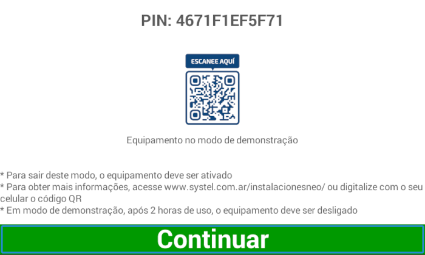
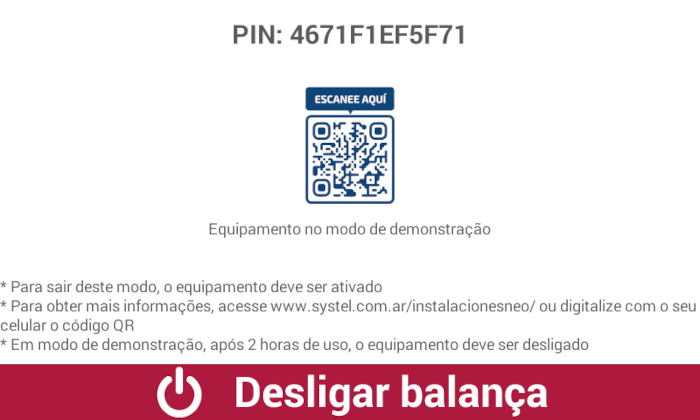

Ativação
Ativação
A tela de ativação será exibida a cada início da balança, até que seja realizado o processo de ativação. Para realizar a ativação, você deve chamar um agente autorizado Systel para realizar a tarefa e acompanhá-lo na primeira experiência com sua escala Cuora Neo Systel.

Pressione o botão continuar para fechar a tela.
Neste modo, a balança estará 100% operacional por 2 horas. Após este tempo, uma mensagem semelhante aparecerá, indicando para desligar a balança.

Pressione o botão de desligamento.